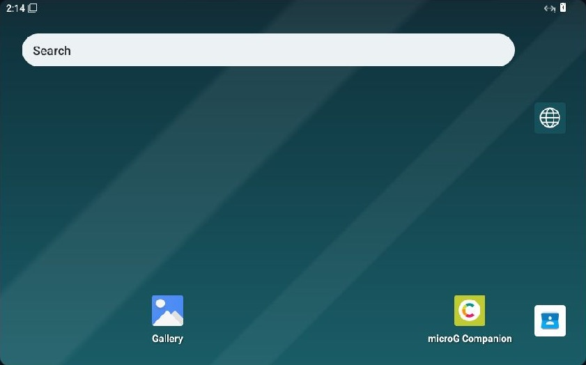

Runs on your machine, in a tab
A whole phone in a browser tab.
Vetro is an ARM64 emulator written in Rust and compiled to WebAssembly. It boots a complete phone system, its own build of AOSP 15 with microG, and lets you see what apps do from the outside. Nothing to install, no account, nothing sent to a server.
Desktop Chrome or Edge, 8 GB of memory. The first visit downloads the phone once (about 700 MiB); after that it resumes in seconds.

The real thing: the phone at its home screen, in Chrome on a Mac.
A real machine, emulated in the page.
No video stream from a data centre and no plug-in. The processor, the memory, the disk and the screen of the phone are a program running in your browser.
Its own processor
An AArch64 CPU with an interpreter and a compiler to WebAssembly, on a copy of QEMU's virt board. Its behaviour is checked against QEMU, instruction by instruction.
Private by construction
The phone, the apps you install and what they save stay in your browser's private storage. No account, no analytics: your browser only downloads the phone's own files.
Back in seconds
The machine is saved as it runs. Close the tab, come back tomorrow: it resumes from where you left it, apps installed and all.
- Open the pageThere is nothing to choose and nothing to set up. Press Launch.
- The phone arrives onceAbout 700 MiB, checked and kept in the browser. Later visits download nothing.
- Use itTouch with the mouse, type with your keyboard, install apps from the catalog or drop an APK on the screen.
What to expect. This is an emulator, so it is slower than the phone in your pocket. On the machines we measure on, menus open in a second or two and an app takes around ten seconds to open the first time. It is for looking closely at what apps do, not for playing games.
Use the phone. Then look inside it.
The network inspector and the recorder work from outside the system, at the virtual hardware: an app cannot see them or switch them off.
Apps
Install from the page's own catalog with one click, or drag your own APK onto the screen.
Using the phoneNetwork inspector
The requests apps make, and a timeline that ties each one to the action of yours that caused it.
Network and timelineFile manager
Browse, view and edit the files inside the phone while it runs, databases and preferences included.
File managerRecord and replay
The machine is deterministic. Record a session, replay it exactly, and jump back to any instruction.
Record and replayDevice profiles
A phone, a small phone or a tablet: screen, memory, time zone and identifiers, without rebuilding anything.
Device profilesSnapshots and your data
What is saved, when, how much space it takes, and how to throw it all away and start over.
Snapshots and saved dataOnline through your own computer.
A web page cannot open network connections by itself, so the phone starts offline. Vetro Connect is a small program you run on your computer: it opens the connections for the phone, over your own line. No server of ours sits in between.
- Only on your machine. It listens on
127.0.0.1and answers the Vetro site alone. - Only the web. HTTP and HTTPS, and name lookups. HTTPS stays encrypted from the app to the real server.
- Not your home network. Private and local addresses are refused: the phone cannot reach your router or your other devices.
- Nothing kept. It shows counters while it runs and remembers nothing when you quit.
Windows and macOS (Apple silicon). Anywhere else with Python 3.10 or newer: python3 relay/py/connect.py from the source.
Read before, or when stuck.
The guide is short and written for people who use the phone, not for people who build emulators.
An independent project, built in spare time.
No ads and no tracking. If Vetro is useful to you, or you just like that it exists, you can help keep it going.
Bitcoin
bc1qee8a06x886ng8ce6qy84l6u6x54jnjsesgqym7
Monero
46qDyafRkn1at3E2GMwuESBeqzpt74xE8S2kjPe35EUyKiS57Ho7cLB1vD2zH4hPmjYcYzWWxSSLZAYB5Hp1yDFrKnPWkR7
Click an address to select it.